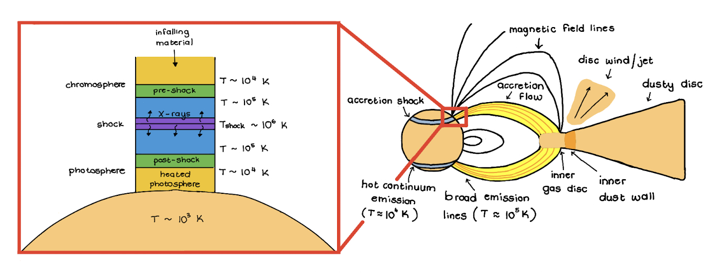

Welcome to my website! I am a fourth year Astrophysics Ph.D. student at Rice University, working under Dr. Chris Johns-Krull. I received my Bachelor's in Physics & Mathematics from the University of Denver in 2022, and then came in search of warmer weather (and I guess more education) in Houston.
My work focuses on young very low mass stars, brown dwarfs, and planetary mass objects. In particular, I am interested in accretion processes onto these objects, which is how they assemble their final mass.
For young stars of approximately solar mass, the accretion paradigm is quite well understood. The figure below shows the mechanics of this process. The young central star is usually very magnetically active and is still surrounded by a circumstellar disc of material. Its magnetic field lines truncate the inner disc, and transport material from the disc to the star, in a process known as magnetospheric accretion. As the material travels along the field lines, it accelerates, reaching near free-fall velocities and up to a million degrees. The velocity will eventually exceed the local sound speed, forming an accretion shock. The accretion shock heats the pre- and post-shock regions, resulting in material ranging from K to K, and producing emission from X-rays all the way to the optical.

I have been very fortunate to participate in several observing runs, usually obtaining data for projects other than my own. These data have all been spectra in both the optical and infrared regimes. I have been very spoilt in that I have used primarily Hubble data, and therefore have not had to collect much data for myself.
I am an international student from Johannesburg, South Africa. When I'm not doing astronomy, I love to swim and doodle.